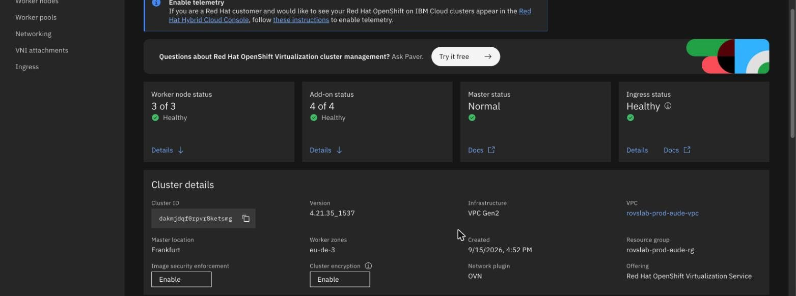
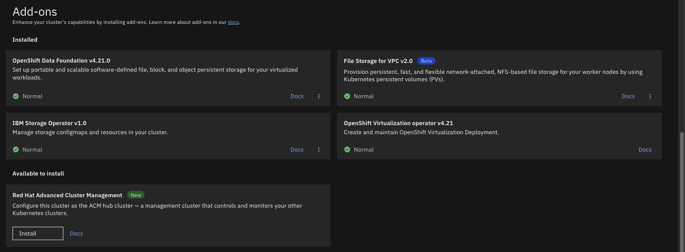

What ROVS is, and who runs what
By the end of this unit you'll know what ROVS is, which parts IBM looks after and which parts are yours, and which three operators you can't install yourself.
Northgate Freight is a made-up haulier that's moving off vSphere. The output and screens in this unit are real. Before anything else, Northgate's VMware admins want to know what they're buying, and who looks after what.
Every screenshot and line of output in this unit comes from a real run on a lab cluster.
Six layers, bottom to top
ROVS is Red Hat OpenShift Virtualization Service on IBM Cloud. It's built on ROKS, which is IBM Cloud's managed OpenShift, and it comes pre-configured for VMs.
The key word is pre-configured. When IBM creates the cluster, it installs and wires up the virtualization stack, the host network configuration and the storage backend. You don't install the virtualization operators yourself.
From vSphere: with ODF, Ceph on the workers' local NVMe does the job that VMFS datastores and vSAN did. The Geneve overlay between nodes is roughly what NSX does between transport nodes. These are rough comparisons of our own, and IBM doesn't describe it this way.
Watch for this. This isn't the same as installing OpenShift Virtualization yourself on a standard ROKS cluster. That's a different product, with different licensing and more to set up by hand.
Whose operator is this?
This is real output from a ROVS cluster, and every operator lists an owner. Tap a part of the drawing to see what it means. You can also click a line of the output.
IBM's add-on
The add-on installs and manages exactly three operators: OpenShift Virtualization, NMState and Node Maintenance. They come from IBM's own mirrored catalog. You can't disable the add-on, and it has no options.
From vSphere: it's roughly a set of VIBs that VMware installs on every host and reserves the right to patch.
Watch for this. You can't install these three from OperatorHub. They're the only three that are blocked.
Yours
The Migration Toolkit for Virtualization (MTV) came from the stock redhat-operators catalog and has no label, because a person installed it. Updating it and removing it are your job.
Watch for this. MTV isn't part of ROVS. If you're moving VMs off vSphere, installing it is your job. OADP and Veeam Kasten install normally too.
The owner label
Every Subscription the add-on created carries the label app.kubernetes.io/created-by: addon-openshift-virtualization, so the cluster itself tells you who owns an operator.
Watch for this. No label means the operator is yours.
NS NAME SOURCE OWNER openshift-cnv ibm-openshift-virt-hyperconverged custom-redhat-operators-openshiftvirt addon-openshift-virtualization openshift-nmstate ibm-openshift-virt-nmstate custom-redhat-operators-openshiftvirt addon-openshift-virtualization openshift-operators ibm-openshift-virt-node-maintenance custom-redhat-operators-openshiftvirt addon-openshift-virtualization openshift-mtv mtv-operator redhat-operators <none>
Where is the control plane?
Run each command in turn. The output is what a ROVS cluster returned, with the node names shortened to fit the page.
oc get nodes
NAME STATUS ROLES AGE VERSION kube-...-00000167 Ready worker 39d v1.34.9 kube-...-000002a1 Ready worker 39d v1.34.9 kube-...-0000039f Ready worker 39d v1.34.9
Three workers, all bare metal, and no control plane node.
IBM runs the masters in its own account.
You need to check the control plane's health. Where do you look?
Show the answer
From the IBM Cloud side. oc get nodes doesn't report master health. It shows as Master status in the IBM Cloud console and in ibmcloud ks cluster get. You can't see etcd as a cluster operator on ROVS either.
ibmcloud ks cluster get --cluster CLUSTER_NAME
State: normal Status: All Workers Normal ... Master Status: Ready (1 month ago) State: deployed Health: normal Version: 4.21.27_1527_openshift Location: Frankfurt
There are two Status lines and two State lines. The four under Master are the control plane.
ibmcloud ks cluster addon options --addon openshift-virtualization
FAILED No addon installation options are available for openshift-virtualization.
FAILED is the answer you expect here, and it isn't a fault.
The add-on has no settings for you to change.
Two things the console tells you
These are real screens. Click where you'd click on a live console. After two misses, the page marks the right place.

Which line shows that this is a ROVS cluster rather than an ordinary OpenShift cluster?
Show where
Right. The Offering line says Red Hat OpenShift Virtualization Service. A standard OpenShift cluster doesn't have that line.

Three add-ons have an options menu. Click the place where the fourth would have one.
Show where
Right. The OpenShift Virtualization row only has a Docs link. The add-on can't be disabled and has no options, so there's no menu. The three storage add-ons can be configured or removed from theirs.
Three questions
Which of these can you install from OperatorHub on a ROVS cluster?
Show the answer
MTV. Only OpenShift Virtualization, NMState and Node Maintenance are blocked. Every other operator installs normally, and looking after it is your job.
One of Northgate's admins wants to switch the virtualization add-on off to save resources. What happens?
Show the answer
It isn't supported. The add-on is a core part of a ROVS cluster and can't be removed. If Northgate needs a cluster without the virtualization stack, it orders a standard OpenShift cluster instead.
You list the nodes and see three workers and no masters. What does that mean?
Show the answer
IBM runs the control plane. This is the ordinary ROKS split: IBM runs the masters and you get the workers. The control plane runs in IBM's account, so it isn't a node you can list.
You know who runs what
IBM runs the control plane and the add-on. Three operators are IBM's, and everything else is yours. Check the masters from the IBM Cloud side.
Tutorial chapter 00, Understand ROKS and OpenShift Virtualization Service, covers the stack, and chapter 05, Understand what the virtualization add-on does on ROVS, covers the add-on.